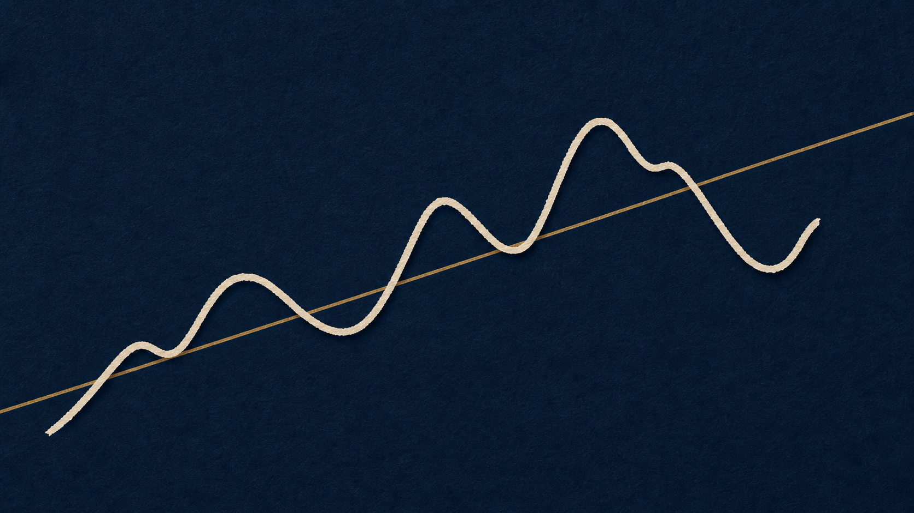
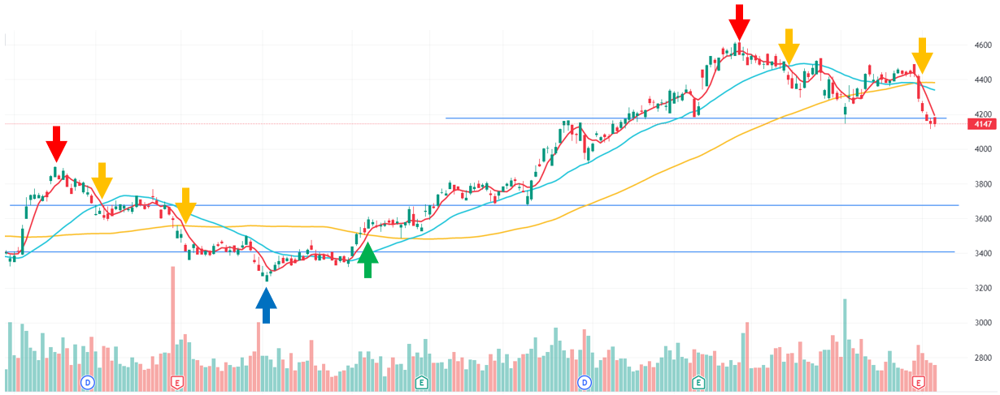

GIA BUSINESS SEMINAR
会社を見る目
良い会社を見つけるだけでは足りない。
数字から、会社の変化を読み取る。
教育目的のセミナーです。事例はすべて架空企業を使用しています。
TODAY'S PROMISE
数字は、会社がどんな状況かを
教えてくれる。
セミナー終了時には、数字から会社の状況がわかる状態を目指します。
SPEAKER
講師：五島 一将
15年
投資の実務
株式のほか、不動産・FX・暗号資産まで経験。証券・保険の営業資格も保有しています。
日本一
教えてきた実績
家庭教師の契約数で日本一。難しいことを噛み砕いて伝えます。
認知科学
×行動心理学
つまずきの解消
どこでつまずくか、どう外すかを理論として説明できます。

Q
知人から、こう言われました。
「うちの会社に10万円出資してくれ」
何を聞きますか？
紙に3つ書いてください — 2分
WHAT YOU ALREADY KNOW
よくでそうな質問
何の会社？
売上は？
利益は？
借金は？
社長はどんな人？
今後伸びる？
どう儲けている？
いま挙げてくださったもの。これが、企業分析です。
01
CHAPTER 01
株を買うとは、
会社の一部を買い
オーナーになるということ
上場会社になると、なぜ私たちは会社を見なくなるのでしょうか。
上場企業になると
業績ではなく株価の意識が強くなる
知人の会社なら
事業・利益・借金・人を見る
株になると
チャート・ニュース・「上がりそう」を見る
02
CHAPTER 02
数字から、
会社の状況を読む
2つの会社を並べて、それぞれの数字が何を語っているかを見ていきます。
CASE STUDY
2つの会社を、並べて見てみます。業績は3年分・単位は億円
| 項目 |
X社 | Y社 |
| 売上高 | 3,800 → 3,450 → 4,050 | 340 → 380 → 420 |
|---|
| 営業利益 | 170 → 120 → 175 | 27 → 33 → 40 |
|---|
| 営業利益率 | 4.5％ → 3.5％ → 4.3％ | 7.9％ → 8.7％ → 9.5％ |
|---|
| 経常利益 | 125 → 78 → 130 | 28 → 34 → 41 |
|---|
| 当期純利益 | 82 → 50 → 86 | 18 → 22 → 27 |
|---|
| 営業キャッシュフロー | ＋180 → ＋95 → ＋30 | ＋24 → ＋30 → ＋35 |
|---|
| 自己資本比率 | 13％ | 53％ |
|---|
| PER | 35倍 | 10倍 |
|---|
| PBR | 4.0倍 | 0.9倍 |
|---|
| 配当利回り | 3.2％ | 3.0％ |
|---|
| 配当性向 | 112％ | 30％ |
|---|
| 時価総額 | 3,000億円 | 270億円 |
|---|
どちらの会社の方が、投資対象としては良さそうでしょうか。
PER
利益の何年分を払うのか。
X社： 3,000億円 ÷ 86億円 ＝ 35倍 Y社： 270億円 ÷ 27億円 ＝ 10倍
これが、PERと呼ばれるものです。
つまり、数字が小さいほうが、投資したお金を回収するのが早いということになります。
REFERENCE
PERの水準は、業種によって違います。
AVERAGE
およそ 15倍
日本の上場企業の平均と言われる水準。業種によって、この平均は大きく上下します。
CAUTION
30倍を大きく超えたら
期待が先行していないかを疑う。流行しすぎていないか、を確認しにいく。
業種ごとの平均は覚えなくて結構です。「いま見ている会社は、同業と比べて高いのか安いのか」——それだけ確認できれば十分です。
とはいえ「PERが安いから買う」というわけではありません。他の指標も見てみましょう。
PBR
積み上げた純資産と、市場価格を比べる。
10万円で売られている財布に、20万円が入っていたら
PBR 0.5倍
10万円で売られている財布に、2万円しか入っていなければ
PBR 5倍
X社 4.0倍 ／ Y社 0.9倍。 Y社は1倍を割っています。帳簿上の純資産より、市場のつけた値段の方が小さい状態です。
※帳簿上の資産が、そのまま現金で残るわけではありません。
EQUITY RATIO
その会社は、誰のお金で回っているか。
自分のお金が、会社全体の何％を占めるか。
裏返せば、残りは他人のお金。ただしその全部が借金ではなく、仕入代金の未払いなども含みます。
X社 13％ ／ Y社 53％。 参考値として40％以上あると財務は安定と見られます。
ただし業種で普通の水準が違います。工場や店舗を多く持つ会社は借入が大きくなり、低めに出ます。
TOP LINE & PROFIT
売上と利益は、増えているか。
売上高
事業の大きさ
まず伸びているか。減っているなら、その理由を探しにいく。
経常利益
金利まで含めた儲け
受取利息や支払利息まで含めた、会社全体の実力。
売上はX社が約10倍。でも100円売って手元に残る利益は、X社4.3円／Y社9.5円。
会社が大きいほど効率がいい、とは限りません。
OPERATING CASH FLOW
利益は出ている。では、現金は増えていますか。
営業キャッシュフロー ＝ 本業で、実際に手元に入ってきた現金。
利益は「売れた」時点で立ちますが、現金は「入金された」時点でしか動きません。
X社 ── 純利益 86億円に対して
営業CF ＋30億円
Y社 ── 純利益 27億円に対して
営業CF ＋35億円
帳簿の上ではX社が3倍稼いでいます。それなのに、実際に入ってきた現金はY社の方が多い。
原因はたいてい売ったのに回収できていない（売掛金）か、仕入れたのに売れていない（在庫）。次はそこを見にいきます。
DIVIDEND
会社が、株主に利益を分けるお金。
株価1,000円・配当50円なら
利回り 5％
配当50円のまま、株価が500円に下がると
利回り 10％
X社 3.2％ ／ Y社 3.0％。 参考値は2〜3％以上。どちらも悪くない数字に見えます。
ただし利回りが高いのは、株価が下がったからか、稼いだ利益を超えて配っているからかもしれません。
PAYOUT RATIO
その配当は、稼いだ利益の中から出ていますか。
X社 ── 稼いだ利益より、多く配っている
112％
Y社 ── 利益の3分の1ほどを配っている
30％
利回りだけ見れば X社 3.2％／Y社 3.0％。ほとんど差がありません。
でもX社は稼いだ以上を配っている状態。その配当が続くかどうかは、別の話になります。
MARKET CAP
その会社は、どのくらいの大きさか。
SMALL
数百億円以下
値動きは大きくなりやすい。その分、伸びしろも大きい。
LARGE
1,000億円以上
規模が大きく、比較的安定しやすい。
X社 3,000億円 ／ Y社 270億円。 会社としてはX社の方が10倍以上大きい。
ただし「大きい」と「良い投資先」は、別の話です。
QUICK REFERENCE
会社を選ぶときに見る、8つの数字。
| 指標 | 何を見るか | 参考値 |
|---|
| 業績 | 売上と利益が増えているか | 増加傾向 |
|---|
| 営業利益率 | 本業でどれだけ効率よく稼げているか | 業種差が大きい・同業と比べる |
|---|
| 営業CF | 利益が現金として入ってきているか | プラス・利益と乖離しない |
|---|
| 自己資本比率 | 誰のお金で会社が回っているか | 40％以上 |
|---|
| PER | 利益の何年分を払うか | 平均15倍・30倍超は要注意 |
|---|
| PBR | 純資産と、市場の値段の比較 | 小さいほど割安・1倍割れは純資産割れ |
|---|
| 配当（利回り／性向） | 株主への還元と、その無理のなさ | 利回り2〜3％以上・性向100％超は要注意 |
|---|
| 時価総額 | 会社の大きさ | 1,000億円以上は安定寄り |
|---|
参考値は、あくまで目安です。 業種によって普通の水準は変わるので、まずは同じ業種の会社と並べて比べてみてください。
NEXT STEP
まずは、この8つで十分です。
慣れて余裕が出てきたら、こんなことも足してみてください。
利益は毎年伸びているか
売上が1社の取引先に偏っていないか
市場そのものは伸びているか
社長はどんな人か
その利益は一時的なものではないか
市場はその会社をどう見ているか
まずは、この8つの指標に慣れるところから。

1年の数字には事情が出る。
5年の数字には会社の体質が出る。
点ではなく、変化の方向を見ます。
CORE MESSAGE
大きい会社と、
良い投資先は、同じではない。
良い会社を、どの値段で買うのかまで考える。それが企業分析です。
COMMON TRAPS
数字を見たとき、やりがちな4つの飛躍。
PERが低い ＝ 割安
低いには理由がある。市場が「もう伸びない」と見ているだけかもしれない。
自己資本比率が低い ＝ 危ない
工場や店舗を多く持つ業種は、もともと低く出る。同じ業種と並べて判断する。
売上が大きい ＝ 儲かっている
見るのは金額ではなく率。100円売って、手元にいくら残るか。
高配当 ＝ 良い会社
稼いだ利益を超えて配っていることがある。配当性向まで見る。
03
CHAPTER 03
良い会社を、
どう買うか
見方がわかっても、買い方を間違えると結果は安定しません。
DIVERSIFY
3つに、分ける。
時期
タイミングの分散
暴落は必ず起きるうえに、いつ来るかは予測できない。だから時期を分けて買う。
会社
銘柄の分散
気に入った会社が見つかっても、1社に集中させない。目安は5〜30社。
業種
業種の分散
景気に敏感な業種と、影響を受けにくい業種を混ぜる。
分散は「当てられないこと」を前提にした設計です。予測を諦めるかわりに、生き残る確率を上げる。
DOLLAR COST AVERAGING
同じ900円でも、買い方で「9個」と「11個」に分かれる。
リンゴ1個の値段：1ヶ月め100円 → 2ヶ月め150円 → 3ヶ月め50円
リンゴの値段
QUANTITY毎月3個ずつ買う
AMOUNT毎月300円分買う
1ヶ月め1個 100円
2ヶ月め1個 150円
3ヶ月め1個 50円
3か月計どちらも900円
9個
平均購入単価 100円
100円で売ると ±0円
11個
平均購入単価 約82円
100円で売ると ＋200円
WHY IT WORKS
積立が効くのは、相場が荒れているときです。
波があった方が、平均の取得単価は下がります。
一時的に含み損でも、一喜一憂せず淡々と続ける。
投資である以上、相場環境によってはマイナスになることもあります。
SECTOR MIX
景気で揺れる業種と、揺れにくい業種。
CYCLICAL ── 景気敏感
自動車・鉄鋼・機械・不動産
景気が良いときに大きく伸びる。悪くなると、その分だけ大きく落ちる。
DEFENSIVE ── ディフェンシブ
食品・医薬品・電力・通信
好況でも不況でも使われ続けるので、値動きが穏やかになりやすい。
どちらが良い、という話ではありません。両方を混ぜておくと、相場全体が荒れたときの振れ幅が小さくなります。
APPENDIX
おまけ：業績が伸びても、株価は一直線には上がらない。

企業の業績：右肩上がり
株価：上下しながら動く
状況①
①業績 ↑
株価 ↓
業績に対して株価が下に離れた局面は、割安になっている可能性があります。
BUYING PRINCIPLE下落中は待つ。反発を確認してから。
APPENDIX
おまけ：トレンドの転換を、どう見るか。

緑の矢印で買い、赤や黄の矢印で売る——という考え方です。本編の企業分析とは別の技術なので、今日はここまでにします。
WHERE TO BUY
口座は、ネット証券で十分です。
01
手数料
店舗を持たないネット証券の方が、手数料は安く済む。
02
単元未満株
本来100株単位の日本株を、1株から買える。
03
注文の時間帯
単元未満株なら、取引時間を気にせず注文を出せる。
まずは1株だけ、実際に1社を持ってみてください。持った瞬間から、その会社の決算の見え方が変わります。

企業分析は、
株式投資だけの技術ではありません。
他社を見る目を持つことで、
自社を見る目も変わります。